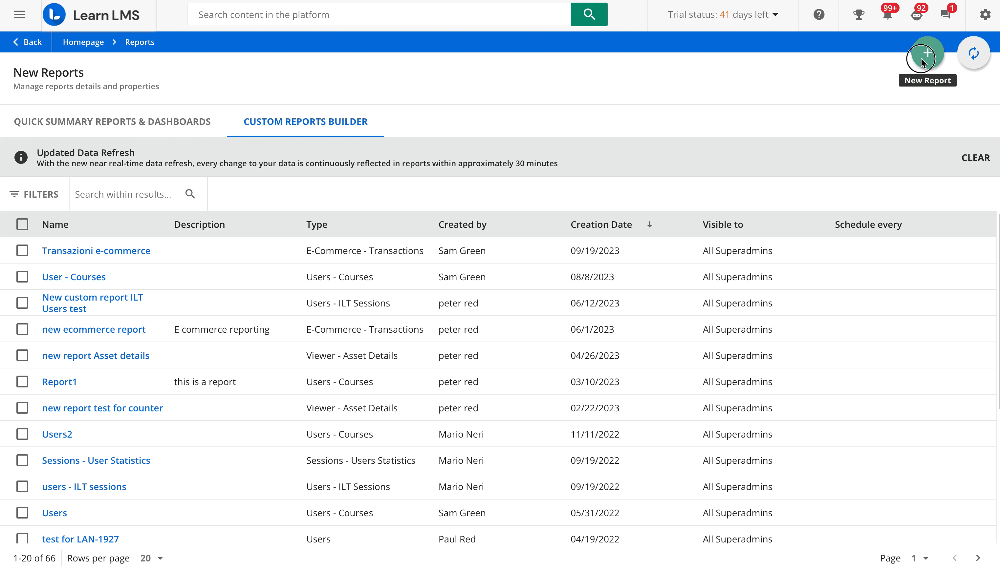
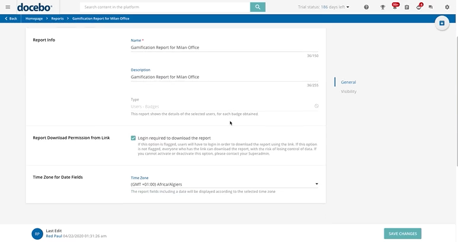
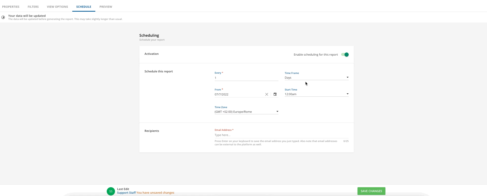
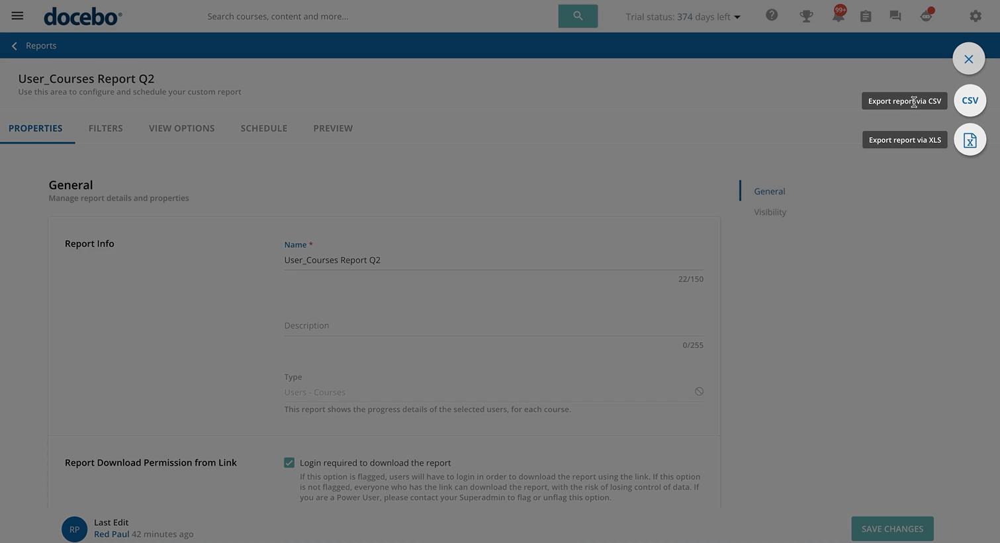

Отчетность
Новые отчеты в Docebo
Инструкция по созданию, настройке, планированию и выгрузке пользовательских отчетов в разделе Reports.
Откройте раздел Reports
Войдите в платформу с правами администратора. Откройте меню навигации, перейдите в блок Data and analytics и выберите Reports.
На странице Reports перейдите на вкладку Custom reports builder. Здесь отображается список созданных отчетов: их можно искать, фильтровать по типу, расписанию и данным создания, а также управлять ими через меню с тремя точками.
- Preview - предварительный просмотр отчета.
- Schedule / Pause schedule - включение или остановка автоматической отправки.
- Duplicate - копирование отчета для новой настройки.
- Export, Edit, Delete - выгрузка, редактирование или удаление.

Создайте новый пользовательский отчет
Нажмите кнопку с плюсом в правом верхнем углу страницы Reports.
- В панели Create a new custom report выберите тип отчета.
- Нажмите Next, чтобы перейти к деталям.
- Введите название отчета. Описание можно заполнить при необходимости.
- Нажмите Create and edit, чтобы открыть настройки отчета.
Настройте свойства отчета
После создания откроется страница отчета с вкладками Properties, Filters, View options, Schedule и Preview.
Что проверить во вкладке Properties
- Report info - название и описание можно изменить, тип отчета остается неизменным.
- Login required to download the report - оставляйте включенным для защиты ссылки на выгрузку.
- Time zone for date fields - укажите часовой пояс, в котором нужно отображать даты.
- Visibility - выберите, кому будет виден отчет в списке Reports.

Настройте фильтры и отображение данных
Фильтры определяют, какие данные попадут в отчет, а View options - какие колонки будут показаны.
Filters
Ограничьте выборку нужными пользователями, курсами, группами, ветками, датами или другими параметрами, доступными для выбранного типа отчета.
View options
Выберите поля, порядок колонок и сортировку. Чем меньше лишних колонок и фильтров, тем быстрее будет работать preview и экспорт.
Настройте автоматическую отправку
Перейдите во вкладку Schedule и включите переключатель Enable scheduling for this report.
- Выберите периодичность: ежедневно, еженедельно или ежемесячно.
- Укажите дату и время старта, а также часовой пояс.
- Добавьте получателей. В Docebo можно указать до 25 email-адресов.
- Сохраните изменения внизу страницы.

Проверьте preview и выгрузите отчет
Перед экспортом откройте вкладку Preview и проверьте, что фильтры и колонки дают нужный результат.
Preview
Предпросмотр показывает первые 100 строк. Если отчет слишком сложный и preview не загружается, временно упростите фильтры или набор колонок, проверьте результат и затем верните нужные настройки.
Export
Экспорт запускается из кнопки в отчете или через меню с тремя точками в списке отчетов. Доступны CSV и XLS. Выгрузка выполняется как background job, после завершения придет уведомление.

Рекомендации перед использованием
Эти настройки снижают риск неверных данных и случайного доступа к отчетам.
- Данные отчетов обновляются в фоне примерно раз в час, поэтому данные предыдущего часа доступны не сразу. Для ручного экспорта выбирайте время ближе к половине часа.
- Для Power Users создавайте отдельные отчеты и расписания по их зоне ответственности, чтобы не раскрывать лишние данные.
- Если владелец расписания деактивирован или потерял права, расписание может перестать работать. В таком случае продублируйте отчет от активного пользователя с нужными правами.
- Для экспорта должна быть включена Notifications app, иначе уведомления о background job могут не работать корректно.
- Если отчет содержит чувствительные данные, не отключайте вход по логину для скачивания и дождитесь истечения старых ссылок перед изменением политики доступа.